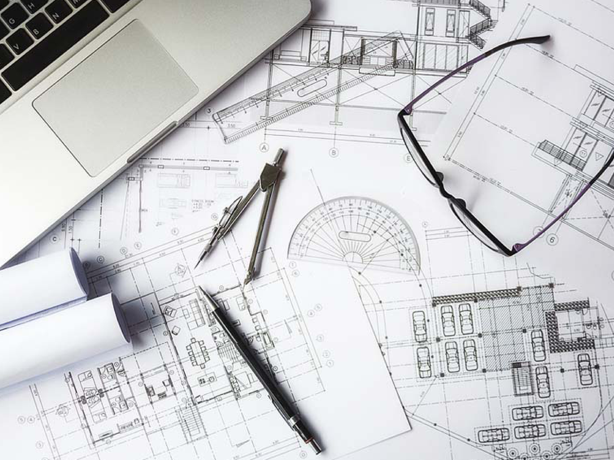
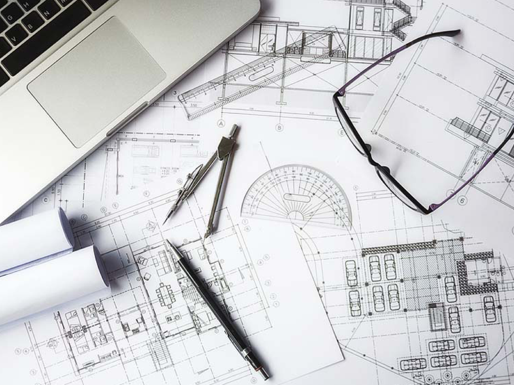

BSc in Architecture
Why study a BSc in Architecture at The British University in Dubai?
The BSc in Architecture degree at BUiD is designed to provide teaching which leads to critical and independent learners. The undergraduate course emphasises the specificity of space and place expressed in integration and acknowledgment of its context. The programme’s modules explore sustainability in architecture, green buildings, energy efficiency, building codes & regulations, building indoor environment, and they depict the cultural and ecological conditions that shape the built environment. Students are encouraged to find their own responsible roles within the architecture profession. The course considers the role of sustainable materials and state of the art technology as integral parts of architectural concepts with emphasis on the importance of occupant experience.
 

Programme description
The student will have knowledge and understanding of fundamental working principles, design strategies, integration of structural systems and major building services, and the impact of design on users’ thermal, visual, acoustic, and health comfort and wellbeing. They will learn what issues and relationships, including technologies and strategies, are involved in the development of a sustainable design approach. They will be able to investigate, conceptualise and develop the design in three-dimensional form and to apply the creative application of architectural theories, inclusive and holistic design, technical requirements, historical & cultural contexts, and sustainability in design studio projects.
Students will be equipped with the skills needed in their employment such as creativity, design presentation skills, problem-solving, and relevant technical and communication skills.
The programme is delivered over four years. Each year is divided into three terms. In each term, students take four modules of 10 credits. Students start with a semi-common first-year before taking programme-specific courses in years 2-4. During years 2, 3 and 4, students will take design studio classes that span over the whole year, with term 3 fully dedicated to their design studio. This allows the students to implement what they have learned during the year into their design project.
The architectural design is taught in an educational model of studio culture with open-ended creative solutions to architectural problems. Some modules will teach special topics with an emphasis on sustainability, indoor environment, building construction and structure. Students explore their creative design through the use of scale models using 3D printing technologies. The programme is designed to equip the students with skills in using state of the art computer technologies such as virtual and augmented reality.
Career prospects
Since our programme is accredited by the Ministry of Education, our graduates are eligible to register with the UAE Society of Engineers which allows them to work in a variety of organisations including public and private institutions. Examples include (but are not limited to) architectural design firms, contracting companies, project management companies, regulatory agencies, or their own private practice.
Course Structure